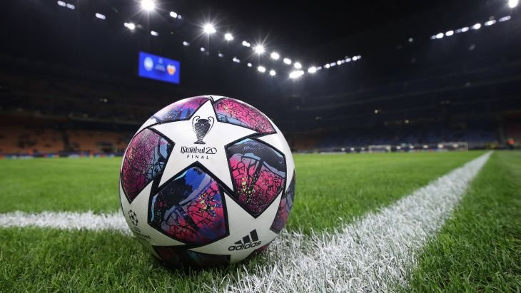

ФУТБОЛ

ФУТБОЛ (англ. football, от foot – нога и ball – мяч), спортивная командная игра, цель которой – забить мяч в ворота соперника, используя индивидуальное ведение и передачи мяча партнерам ногами, головой и др. частями тела – кроме рук.
В матче побеждает команда, забившая больше голов. В настоящее время футбол – спорт номер один в мире. Наряду с различными турнирами национальных сборных во второй пол. В 20 в. большую популярность приобрели международные соревнования клубных команд. Все большее развитие получает женский футбол. Во многих странах культивируется мини-футбол, «пляжный футбол» и пр. разновидности футбола. Сейчас во всем мире регулярно играют в футбол более 240 млн. человек (примерно каждый 25-й житель Земли), функционируют 1,5 млн. команд и 300 тысяч клубов.
Размер футбольного поля и линии разметки Стандартное поле для большого футбола представляет собой прямоугольную площадку, в которой линии ворот (лицевые линии) обязательно короче боковых линий. Далее мы рассмотрим параметры футбольного поля. Размер футбольного поля в метрах четко не регламентирован, но есть определенные граничные показатели. Для проведения матчей национального уровня стандартная длина футбольного поля от ворот до ворот должна быть в пределах 90-120 метров, а ширина 45-90 метров. Площадь футбольного поля колеблется в пределах от 4050 м2 до 10800 м2. Для сравнения 1 гектар = 10 000 м2. Для международных матчей длина боковых линий не должна выходить за пределы интервала 100-110 метров, а линий ворот за пределы 64-75 метров. Существуют рекомендованные FIFA габариты футбольного поля 105 на 68 метров (площадь 7140 квадратных метров).
Каким же мячом играют в футбол? Профессиональный футбольный мяч состоит из трёх основных компонентов: камеры, подкладки и покрышки. Камера обычно изготавливается из синтетического бутила или натурального латекса. Подкладка – это внутренняя прослойка между покрышкой и камерой. Подкладка напрямую влияет на качество мяча. Чем она толще, тем мяч качественнее. Обычно подкладку делают из полиэстера или спрессованного хлопка. Покрышка состоит из 32 синтетических водонепроницаемых кусков, 12 из которых имеют пятиугольную форму, 20 – шестиугольную.